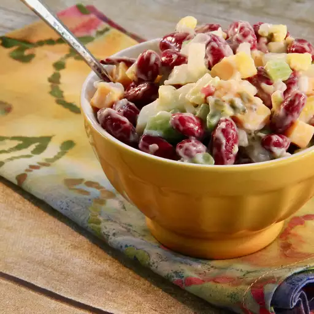

Kidney Bean Salad

Desciption
This kidney bean salad is a simple and delicious combination of hard-cooked eggs, beans, onion, celery, and sweet pickle relish. A little mayo holds it all together.
Ingredients
- 2 eggs
- 2 (15 ounce) cans kidney beans, drained
- ½ cup mayonnaise
- ½ onion, diced
- 1 stalk celery, diced
- 2 tablespoons sweet pickle relish
- salt and pepper to taste
Steps
- Place eggs in a saucepan and cover with cold water. Bring to a boil, remove from heat, and let eggs stand in hot water for 15 minutes. Remove eggs from hot water, cool under cold running water; peel and chop.
- Mix chopped eggs, kidney beans, mayonnaise, onion, celery, and relish together in a bowl until just combined; season with salt and pepper. For best flavor results, chill salad in the refrigerator before serving, at least 1 hour.